3. Intersections with State-space Partitions¶
For every 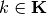 and its associated simplicial partition element  with
positive volume, the
set-valued image
with
positive volume, the
set-valued image  :
:
is another
 -simplex contained in the unit -simplex
-simplex contained in the unit -simplex  ; and
; andintersects with:
- at least one partition element 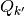 where
 and
and - at most all partition elements
 ;
;
- at least one partition element 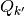 where
3.1. Polytope intersection problems¶
Denote

as the sets of indexes to respective partition-elements—i.e.  —that contain non-empty
intersections with each simplicial image . Each nonempty
intersection, induced by each
—that contain non-empty
intersections with each simplicial image . Each nonempty
intersection, induced by each  and 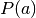, is described by
and 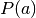, is described by
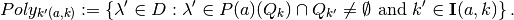
Note
Each intersection  , for each
and each 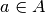, is a
polytope, and is at least a simplex, and is a subset of partition
element , where 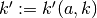.
, for each
and each 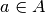, is a
polytope, and is at least a simplex, and is a subset of partition
element , where 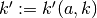.
These nonempty intersections are such that
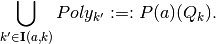
Example
If  , then is a unit 2-simplex, and
each can be a polygon or a triangular subset in .
, then is a unit 2-simplex, and
each can be a polygon or a triangular subset in .